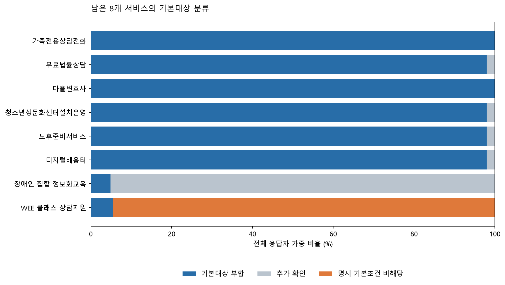

제외 정책 반영 후 재분석
원정책 461개에서 추가확인 대상 451개와 기존 확산모델의 19개를 모두 제외했습니다. 두 목록에서 17개가 겹쳐 총 453개를 제외했고, 8개를 재분석했습니다.
활성 서비스8개
분석 대상33,944명18,467가구
기본대상 부합 평균6.02개가구원 가중치 적용
추가확인 평균1.03개개인별 미확인 조건
여기서 기본대상 부합은 저장된 정책 원문의 일반 이용대상 조건과 일치한다는 뜻입니다. 서비스 이용 희망을 전제로 하며, 실제 신청 승인·선정·급여 지급을 예측하지 않습니다. 미확인을 부적격으로 처리하지 않았습니다.
이번 결과가 말하는 것
일반 안내 서비스가 다수여서 평균값이 높게 나타납니다. 이를 지원금의 풍부함이나 개인별 실제 수혜량으로 해석할 수 없습니다. 개인별 미확인 항목은 별도로 남겼습니다.
